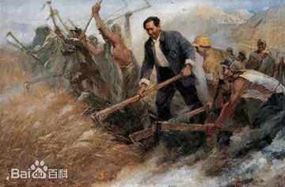

19世纪，美国和欧洲等许多国家，逐步由资本主义发展到帝国主义阶段，为了刺激经济的高速发展，榨取更多的剩余价值，以维护这个高速运转的资本主义机器，资本家不断采取增加劳动时间和劳动强度的办法来残酷地剥削工人。 在美国，工人们每天要劳动14至16个小时，有的甚至长达18个小时，但工资却很低。马萨诸塞州一个鞋厂的监工曾经说过这样的话：“让一个身强力壮体格健全的18岁小伙子，在这里的任何一架机器旁边工作，我能够使他在22岁时头发变成灰白。”沉重的阶级压迫激起了无产者巨大的愤怒。他们知道，要争取生存的条件，就只有团结起来，通过罢工运动与资本家作斗争。工人们提出的罢工条件，就是要求实行八小时工作制。

1921年“五一”前夕，在北京的共产主义小组成员邓中夏等人创办的长辛店劳动补习学校里，工人们学唱《五一纪念歌》。其歌词是：“美哉自由，世界明星，拼吾热血，为他牺牲，要把强权制度一切扫除净，记取五月一日之良辰。红旗飞舞，走光明路，各尽所能，各取所需，不分贫富贵贱，责任唯互助，愿大家努力齐进取。”这首雄壮有力的歌，是由长辛店劳动实习学校的教员和北京大学的进步学生共同创编而成的。
新中国成立以后，中央人民政府政务院于1949年12月将5月1日定为法定的劳动节，全国放假一天。每年的这一天，举国欢庆，人们换上节日的盛装，兴高采烈地聚集在公园、剧院、广场，参加各种庆祝集会或文体娱乐活动，并对有突出贡献的劳动者进行表彰。
相关信息来源于百度百科，完成于2021-04-26